Матеріали Дентсплай Сірона · журнал «ДентАрт» 2023 №4
Формувальна система Ultimate: відкриття входу для 3D очищення та обтурації
The Ultimate Shaping System: An Opening for 3D Cleaning and Filling Root Canals
ProTaper вийшов на ринок у 2001 році, еволюціонував до ProTaper Universal (PTU) у 2006 році, прогресував до ProTaper Gold (PTG) у 2014 році, і його розвиток продовжується із запуском ProTaper Ultimate у 2021 році. Кожне перевтілення давало найкраще, що технологія могла запропонувати в той чи інший період. ProTaper став відомим своєю здатністю безпечно препарувати як анатомічно складні, так і прості канали, пропонуючи при цьому простий клінічний робочий процес (рис. 1).
Оцінити історію успіху ProTaper можна за такими цифрами: трохи більше ніж за 20 років було продано 371 мільйон файлів, врятовано 200 мільйонів зубів, і про нього було опубліковано 1200 рецензованих наукових статей.
Перш ніж ми детально розповімо про ProTaper UItimate, розгляньмо кілька важливих концепцій формування каналів.
Концепції формування каналів
Цілі сучасної ендодонтії спрямовані на формування каналів, тривимірне очищення та обтурацію системи кореневих каналів (їх часто називають трьома стовпами ендодонтичної тріади) (рис. 2). Однак деякі клініцисти заявляють, що препарування каналів має бути «відокремлене» від тріади, і ратують за мінімальне використання інструментів для формування каналу або відсутність інструментації взагалі. Ця дискусія про препарування зосереджена на благородній, але часто неправильно усвідомленій концепції мінімально інвазивної ендодонтії (МІЕ). Проте концептуально питання залишається відкритим: чи можна передбачувано очистити та запломбувати мінімально підготовлений канал і пов’язану з ним систему відгалужень?2
Верхівкова третина вважається критичною зоною, оскільки цю частину системи кореневого каналу найважче очищати та дезінфікувати.3 Анатомічна складність цієї зони полягає в тому, що вона являє собою нішу, де зосереджена тканина пульпи та шкідливі мікроорганізми і біоплівка, якщо вони є.4
Отже, з біологічної точки зору є сенс створити інструмент, який забезпечує створення форми на глибині та визначається як інструмент, що має менший верхівковий діаметр, але з більшою апікальною конусністю на одну третину для оптимізації тривимірного очищення і обтурації системи кореневих каналів.5 Нехтування важливістю підготовки каналів, фанатично вірячи в неоднозначну технологію дезінфекції і неперевірений метод обтурації, на жаль, існує.
Система ProTaper Ultimate зберігає культеву особливу форму апікальної третини з критичною відмінністю в тому, що препарування двох корональних третин безкомпромісно дотримується концепції та тенденції MIE (рис. 3 а). Щоб підтримувати форму на всій довжині кореневого каналу, система формування ProTaper уперше представила фінішні файли з конусністю 7 %, 8 % і 9 % у їхніх апікальних 3 мм, з подальшим використанням регресивних інструментів від D4 до D16.6,7 Глибока форма служить для скорочення довжини латеральних каналів, для збільшення об’єму іригаційного розчину та покращення активного обміну іригаційного розчину в інструментальних та неінструментальних аспектах системи кореневих каналів (фото 3 б).8 Таким чином, формування каналу, відповідного для анатомії кореня, підкреслює консервативне препарування середини і глибокої частини каналу.
Файли системи ProTaper Ultimate
Є 5 основних файлів ProTaper Ultimate, які використовуються найчастіше: Slider, Shaper і три файли Finishers різного розміру (рис. 4 а). Додатково є 3 допоміжні файли: допоміжний формувальний файл, допоміжний фінішний файл і великий допоміжний фінішний файл. Усі файли Ultimate мають ручку довжиною 11 мм для полегшення доступу до бокових зубів, доступні довжиною 21 мм, 25 мм і 31 мм та пропонуються в обох варіаціях для машинного і ручного застосування. Ручні файли забезпечують неперевершений контроль і безпеку під час препарування апікальної ділянки тих каналів, які розділяються, різко викривляються або мають незвичний хід та вигин (рис. 4 б).
Кожні файли системи ProTaper Ultimate проходять специфічну термообробку, що ґрунтується на діаметрі, конусності та поперечному перерізі кожного файла (рис. 5). Усі файли ProTaper Ultimate виготовляються з NiTi сплаву, і колір будь-якого файла визначається тонким поверхневим шаром оксиду, який утворюється в результаті спеціальної термічної обробки файла. Термічна обробка застосовується для значного поліпшення гнучкості, підвищення стійкості до циклічної втоми і оптимізації продуктивності. Загалом, кожен файл ProTaper Ultimate має поперечний переріз, який починається як ромб з D1–D3 і продовжується як паралелограм, що постійно змінюється від D4 до D16.
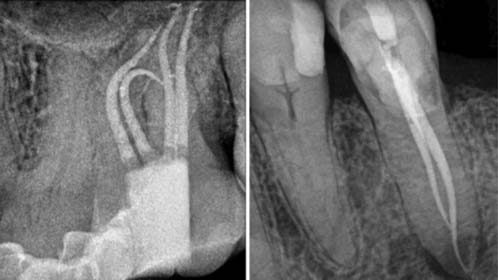
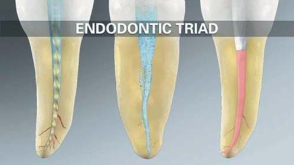
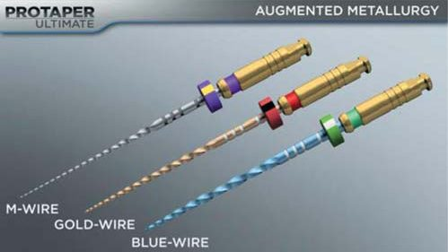
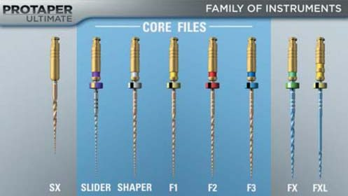
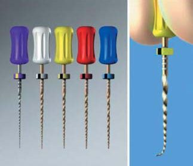
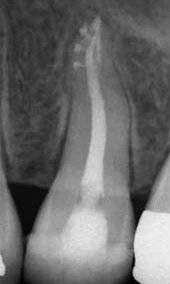
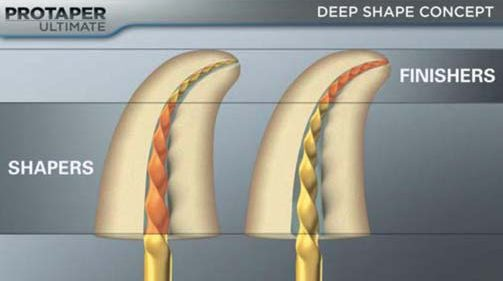
Файли ProTaper Ultimate мають переваги запатентованого процесу обробки зі змінним зсувом (AOM). AOM зменшує контакт між файлом і дентином, покращує гнучкість і створює більше вільного простору для видалення ошурків з каналу (рис. 6).
Усі файли ProTaper Ultimate перевірені на швидкості 400 об/хв, торк між 4,0 і 5,2 Нсм, ця швидкість і торк зменшують ризик поломки файлів, одночасно підвищуючи ефективність препарування. Зрештою усі файли Ultimate мають три незабарвлені кільця на проксимальному кінці кожної ручки, щоб відрізнити ці файли від файлів PTG попередньої версії.
А тепер докладніше розглянемо кожен файл, який є у системі ProTaper Ultimate.
Слайдер
Слайдер — це ротаційний файл, який позначений фіолетовими силіконовим стопером та ідентифікаційним кільцем на ручці. Слайдер має поступово зростаючий відсоток конусності від 2 % до 8 % уздовж його активної частини з діаметром поперечного перерізу D0, D4, D8, D12 та D16, що відповідає діаметру 0.16 мм, 0.26 мм, 0.44 мм, 0.68 мм та 0.99 мм. У поєднанні цей новий поперечний переріз, АОМ та поступова конусність дозволяють файлові безпечно і вибірково працювати між D4 та D12 за допомогою великих, міцніших і ефективніших лез.
Слайдер проходить передмеханічну запатентовану термічну обробку M-wire, яка, як було показано, підвищує стійкість до циклічних навантажень більш як на 400 %.9 Слайдер являє собою прорив у проходженні кореневого каналу, поскільки це перший файл, обраний і використовуваний для проходження та убезпечення більшості каналів. За визначенням, безпечний канал — це канал, який має гладенький пройдений шлях на всю довжину від устя до верхівки.10
Міжнародні лідери думок підтвердили, що слайдер досягає бажаної робочої довжини у 63 % випадків у бічних зубах, як правило, за 2–3 введення, і при цьому немає потреби у використанні ручних файлів.1
Шейпер
ProTaper Ultimate Shaper — це файл, позначений білими силіконовим стопером та ідентифікаційним кільцем на ручці. Тоді як PTG система має 2 формувальні файли, виготовлені з NiTi дроту 1,2 мм, система Ultimate має 1 формувальний файл, виготовлений з 1,0 мм NiTi дроту, що проходить термічну підготовку Gold після механічної обробки.
Шейпер має прогресивно зростаючий відсоток конусності його активної частини з діаметрами поперечного перерізу D0, D4, D8, D12 і D16, що відповідають 0,20 мм, 0,40 мм, 0,65 мм, 0,88 мм і 1,0 мм. Ultimate Shaper використовується для оптимального попереднього розширення корональних двох третин каналу, що у свою чергу забезпечує доступ до зазвичай анатомічно складнішої апікальної третини того самого каналу.7
Фінішери
В основному наборі файлів системи ProTaper Ultimate є 3 фінішні файли, що подібно до Shaper використовують термічну обробку Gold після механічної обробки. Фінішні файли називаються F1 (20/07), F2 (25/08) і F3 (30/09) і відповідно мають жовті, червоні та сині силіконові стопери й маркувальні кільця на ручках. Як зазначалося раніше, усі основні фінішери мають встановлену конусність від D1–D3, а потім відсоткове зменшення конусності від D4–16. Ця особливість дизайну вибірково готує глибоку форму, що забезпечує більший об’єм рідини, покращуючи потенціал активного обміну реагенту. Важливо, що глибока форма служить для безпечного обмеження іригаційної рідини в зоні механічної обробки, одночасно створюючи зону фіксації для контрольованої 3D обтурації.8,11
Допоміжний формуючий файл (SX)
ProTaper Ultimate Auxiliary Shaper, або SX, має загальну довжину 19 мм, поперечний переріз оновленого дизайну у формі паралелограма та поступово зростаючу у відсотках конусність уздовж активної частини. SX має діаметри D0, D5, D6, D8 і D9, які відповідають діаметрам поперечного перерізу приблизно 0,20 мм, 0,50 мм, 0,70 мм, 0,90 мм і 1,10 мм. Slider часто використовується для розширення каналу таким чином, щоб канал був пристосований до верхівки файла SX. SX використовується виконанням бокових рухів на виході з каналу, щоб усунути корональні перешкоди, попередньо збільшити просвіт каналу та уникнути фуркаційної небезпеки в корональній частині каналу, що сприяє препаруванню, зосередженому на корені (рис. 7).12
Допоміжні фінішери (FX і FXL)
Система ProTaper Ultimate має 2 допоміжні фінішні файли. Файл із зеленими силіконовим стопером та ідентифікаційним кільцем на ручці — це допоміжний фінішний файл, який називається FX (35/12). FX має фіксовану конусність 12 % від D1–D3, регресивну конусність від D4–D16 і виготовлений з NiTi дроту діаметром 1,2 мм. Файл із жовтими силіконовим стопером та двома ідентифікаційними кільцями на ручці — великий допоміжний фінішний файл, який називається FXL (50/10). FXL має фіксовану конусність 10 % від D1–D3, потім регресивну конусність від D4–D7, де його максимальний діаметр наближається до 1,0 мм. FX i FXL призначені для використання в кореневих каналах більшого діаметру та анатомічно прямих кореневих каналах, а також у каналах, які мають патологічні або ятрогенні дефекти (рис. 8).
Клінічна техніка
Після створення доступу в значній більшості зубів візуалізуються вхід/входи в канал, які можна ідентифікувати. Проте заповнення доступу до порожнини зуба не гарантує потрапляння NaOCI у канал, оскільки будь-який обраний файл значною мірою витіснить малий об’єм іригаційного розчину. У таких випадках порожнину зуба заповнюють лубрикантами, такими як RC Prep, Pro-Lube або Glyde. Слайдер є першим обраним файлом, який використовується для проходження будь-якого каналу. Таким чином, його фіолетовий силіконовий стопер розташований відповідно до діагностованої робочої довжини.
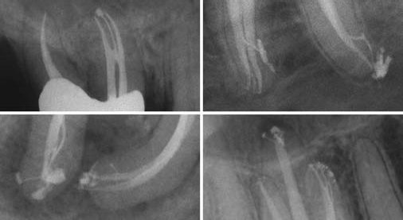
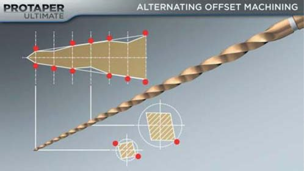
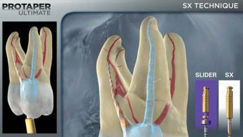
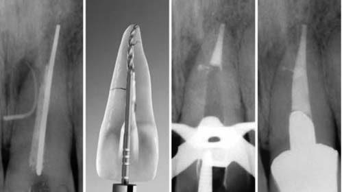
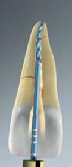
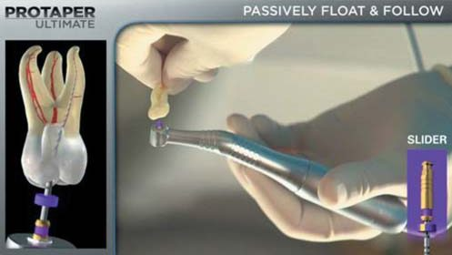
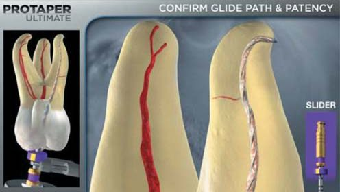
Процедура Glide Path
Формування килимової доріжки (glide path) розпочинають, затиснувши наконечник між великим пальцем і пальцями, щоб пасивно дозволити Slider поступово просуватися глибше в канал.13 Для клініцистів розумно тримати пальці поза головкою наконечника, щоб перешкоджати небезпечному тиску всередині каналу (рис. 9).
Коли силіконовий стопер наближається до обраної контрольної точки, до цього файла приєднується контакт електронного апекслокатора (EAL). Коли EAL відображає «Apex», фіксується робоча довжина; перевіряється апікальна прохідність (рис. 10). Крім того, лубрикант надає інше бачення та є корисним для візуального підтвердження робочої довжини.
У тих випадках, коли Slider застрягає і перестає просуватися глибше в канал, виведіть його! Очистіть робочу частину файла від ошурків, додайте більш в’язкого лубриканта за необхідності та знову введіть цей файл у канал. Зазвичай для досягнення бажаної робочої довжини знадобиться кілька введень файла.
Однак якщо Slider перестає пасивно просуватися до робочої довжини, виведіть цей ротаційний файл і використовуйте ручні файли невеликого розміру, щоб сформувати та визначити, чи є плавна відтворювана килимова доріжка до робочої довжини.10,12,13 Після обробки каналу вручну використовуйте механічний інструмент Slider на необхідну довжину, щоб розширити, згладити та покращити цю доріжку.
Коли Slider досягне бажаної робочої довжини, відведіть цей файл з робочої довжини на 1 стоп, а потім пасивно дайте файлу повернутися до потрібної довжини. Потім виведіть Slider від робочої довжини на 2 стопи, потім на 3 стопи, кожного разу дозволяючи файлові рухатися в напрямку до робочої довжини і назад. У цьому методі застосування килимової доріжки не бажано працювати наближено біля верхівки каналу; навпаки, кожен канал вважається «захищеним», якщо є плавний відтворюваний шлях до потрібної довжини, а апікальний отвір каналу відкритий. Механічне формування килимової доріжки є значним проривом у клінічній ендодонтії, оскільки воно зменшує післяопераційний біль, є надзвичайно ефективним і забезпечує потрібну конусність до необхідної довжини для подальшого використання Shaper.14
Формування двох третин кореневого каналу
Коли апікальна третина каналу сформована, лубрикант вимивається, а порожнина зуба доверху заповнюється NaOCI. Shaper вводимо в канал і дозволяємо пасивно просуватися до робочої довжини. У каналах, які мають нерівний поперечний переріз, надзвичайно потрібні вибіркові «вичищаючі» рухи на виході з каналу, оскільки це дозволяє файлові контактувати з більшою площиною стінок дентину. Якщо Shaper перестає пасивно просуватися, цей файл із каналу виводиться. Після будь-якого файла канал завжди потрібно промивати, використовуйте або слайдер, або активний полімерний файл, закріплений в EndoActivator (Dentsply Sirona), а потім повторно промийте. Залежно від довжини, діаметра або кривизни каналу, продовжуйте цей протокол із Shaper, доки не буде досягнуто кінця каналу (рис. 11).
Опрацюйте апікальну третину каналу
Коли Shaper досягає потрібної довжини, цей файл виводять, а порожнину зуба заповнюють свіжим 6 % NaOCI. Тепер переходимо до фінішного файла Ultimate F1, який розроблений спеціально для препарування апікальної частини, і формуємо гладеньку поверхню глибокої частини цього каналу. F1 використовується пасивно, без вичищаючих рухів, просуваючись глибше в канал. Якщо F1 перестає легко просуватися по довжині каналу, стає зрозумілим, що його леза перевантажені дентинними ошурками, а це обмежує його здатність зрізати дентин та втягуватися глибше в канал. У таких випадках виведіть файл з каналу, промийте канал, використовуйте Slider або ендоактивацію, а потім повторно промийте канал. Використовуйте F1 один або кілька разів, доки не буде досягнуто кінцевої довжини (рис. 12).
Критерії фінішної обробки
«Критерії фінішної обробки» ProTaper Ultimate підтверджуються щоразу, коли візуально апікальні кілька міліметрів будь-якого файла Ultimate Finishing повністю забиті ошурками дентину (рис. 13).15 Клінічно послідовність препарування часто проста, як 1, 2, 3, або в кольоровому маркуванні ISO в робочій послідовності: фіолетовий, білий, жовтий. Проте після видалення будь-якого фінішного файла клініцист може спостерігати, що апікальна частина файла забита дентинними ошурками частково або не забита. Як правило, у таких випадках перейдіть до наступного за послідовністю фінішного файла. Крім того, верхівку практично будь-якого каналу можна виміряти за допомогою ручного файла NiTi з конусністю 2 %, діаметр якого дорівнює діаметру D0 останнього фінішного файла, введеного на потрібну довжину.16
Якщо вимірювальний файл щільно прилягає по довжині, форма каналу сформована. З іншого боку, якщо вимірювальний файл нещільно прилягає по довжині каналу, це просто означає, що верхівка каналу більша за вимірювальний файл. Як було зазначено, зазвичай клінічний вибір полягає в тому, щоб переходити до наступного послідовного фінішного файла або бути готовим до апікального обрізування основного конуса гутаперчі (GPMC) відповідного розміру, що відповідає останньому фінішному файлу, яким працювали по довжині каналу.
Підсумовуючи механічну обробку каналу, ставимо клінічне запитання: «Коли я буду готовий до обтурації каналу?». Відповідь: «Коли ви зможете підібрати відповідний за розміром гутаперчевий штифт». Запитання: «Коли ви зможете підібрати гутаперчевий штифт?». Відповідь: «Коли у вас буде сформований канал» (рис. 14).
Як ви прочитали, форма каналу підтверджується, коли апікальна частина останнього фінішного файла забита ошурками дентину. Форми ProTaper Ultimate дозволяють використовувати будь-який метод обтурації (рис. 15, 16).
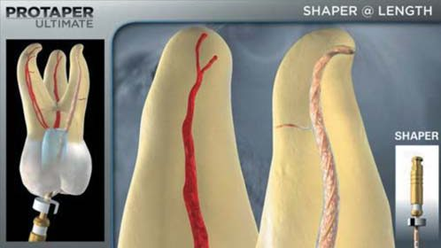
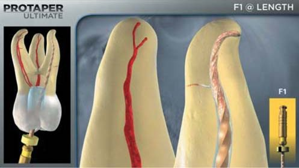
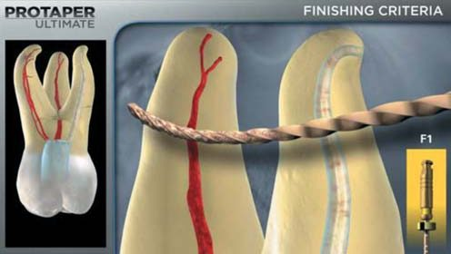
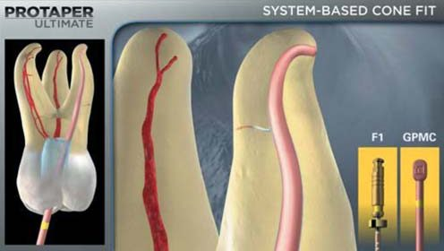
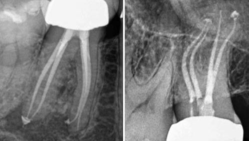
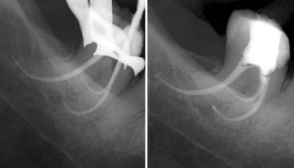
Висновки
ProTaper Ultimate є значним досягненням у механічній обробці каналів, бо об’єднує найкращі властивості формування каналів РroTaper минулого з останніми досягненнями в технології, металургії та дизайні. Форма файлів Ultimate зберігає структуру зуба і дозволяє клініцистам використовувати системні тривимірні технології дезінфекції та обтурації, які є високоефективними, простими у використанні і доступними за ціною.
Файли ProTaper Uitimate — це не просто окрема система для формування каналів; скоріше ця система є важливою опорою ендотріади, оскільки формування просвіту кореневого каналу, що відповідає анатомії кореня, полегшує тривимірне очищення й заповнення систем кореневих каналів, а відтак сприяє передбачуваним успішним результатам ендодонтичного лікування.
Література
- Dentsply Sirona marketing data, Personal communication, 2021.
- Ordinola-Zapata R., Mansour D., Saavedra F., Staley C., Chen R., Fok A. S. In vitro efficacy of a non-instrumentation technique to remove intracanal multispecies biofilm. Int Endod J. Published online February 12, 2022.
- Zehnder M. Root canal irrigants. J Endod 32:5, pp. 389–397, 2006.
- Arnold M., Ricucci D., Siqueira J. F. Infection in a complex network of apical ramifications as the cause of persistent apical periodontitis: a case report. J Endod 39:9, pp. 1179–1184, 2013.
- Schilder H. Cleaning and shaping the root canal. Dent Clin North Am 18:2, pp. 269–296, April 1974.
- West J. D. Introduction of a new rotary endodontic system: progressively tapered files. Dent Today 20:5, pp. 50–57, 2001.
- Ruddle C. J. Ch. 8. Cleaning and shaping root canal systems. In Pathways of the Pulp, 8th ed., Cohen S., Burns R. C., eds. St. Louis: Mosby, pp. 231–291, 2002.
- Machtou P., West J. D., Ruddle C. J. Deep shape in endodontics: significance, rationale, and benefit. Dent Today 41:1, pp. 74–77, 2022.
- Johnson E., Lloyd A., Kuttler S., Namerow K. Comparison between a novel nickel-titanium alloy and 508 nitinol on the cyclic fatigue life of ProFile 25/.04 rotary instruments. J Endod 34:11, pp. 1406–1409, 2008.
- Ruddle C. J., Machtou P., West J. D. Endodontic canal preparation: innovations in glide path management and shaping canals. Dent Today 33:7, pp. 118–123, 2014.
- Schilder H. Filling root canals in three dimensions. Dent Clin North Am pp. 723–744, November 1967.
- Ruddle C. J. The ProTaper technique. Endodontic Topics 10: 187–190, 2005.
- West J. D. The endodontic glidepath: secret to rotary safety. Dent Today 29:9, pp. 86, 88, 90–93, 2010.
- Pasqualini D., Mollo L., Scotti N., Cantatore G., Castellucci A., Migliaretti G., Berutti E. Postoperative pain after manual and mechanical glide path: a randomized clinical trial. J Endod 38:1, pp. 32–36, 2012.
- Ruddle C. J. Finishing the apical one-third: endodontic considerations. Dent Today 21:5, pp. 66–73, 2002.
- Ruddle C. J. Gauging the terminus: a novel method. Endodontic Practice US 5:6, p. 56, 2012.